Пушкин ⟨цифровой⟩: как спроектировать архив, понятный не только исследователям
Научно-просветительский портал для работы с рукописями, прижизненными изданиями, комментариями и связанными материалами о Пушкине.
Контекст
Пушкин ⟨цифровой⟩ — проект по оцифровке и публикации материалов Пушкинского Дома.
Портал должен был открыть доступ к рукописям, прижизненным изданиям, редакциям произведений, научным комментариям, библиографии и справочным материалам о Пушкине.
До этого большая часть материалов была доступна только узкому кругу специалистов. Чтобы работать с архивами, нужно было приезжать в Петербург и проходить отдельные процедуры доступа к редким материалам.
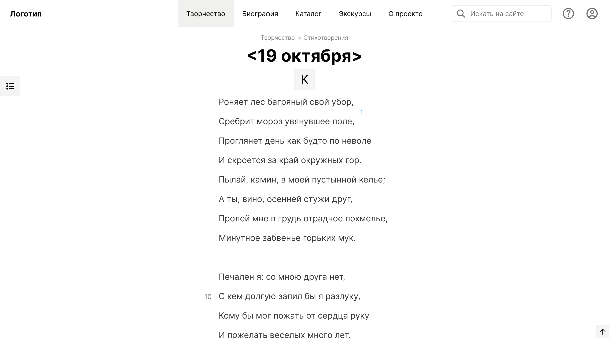
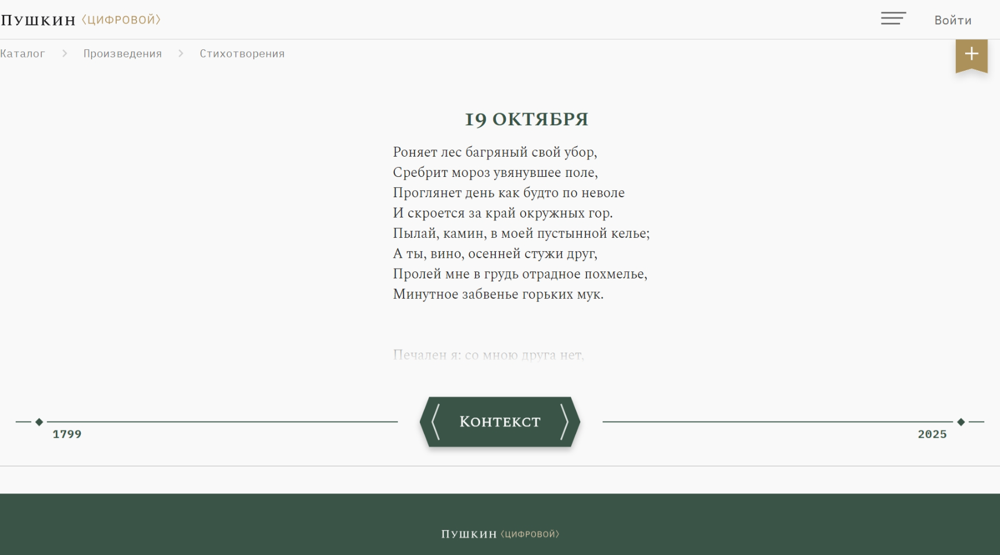
Задача
Нужно было спроектировать научно-просветительский портал, который одновременно сохраняет академическую точность и остаётся понятным для людей с разным уровнем подготовки.
Основные пользовательские группы:
- исследователь;
- преподаватель;
- студент;
- школьник.
Для одних портал должен был стать инструментом профессиональной работы с источниками, для других — понятной точкой входа в материалы о Пушкине.
Моя роль
Я отвечала за UX-направление проекта: карту сайта, пользовательские сценарии, wireframes, финальные UX-макеты и мобильную версию интерфейсов.
Также я участвовала во взаимодействии с ИТМО, разработчиками и академическим сообществом: помогала переводить сложные обсуждения о структуре материалов в конкретные интерфейсные решения.
Информационная архитектура
Главная сложность была не в том, чтобы показать текст произведения. Нужно было показать произведение как систему связанных данных.
Вокруг одного произведения могли существовать рукописи, редакции, прижизненные издания, научные комментарии, библиография, корреляты и просветительские материалы.
Мы проектировали архитектуру так, чтобы человек сначала видел понятный вход — текст произведения или каталог, — а затем мог постепенно уходить глубже в академический контекст.
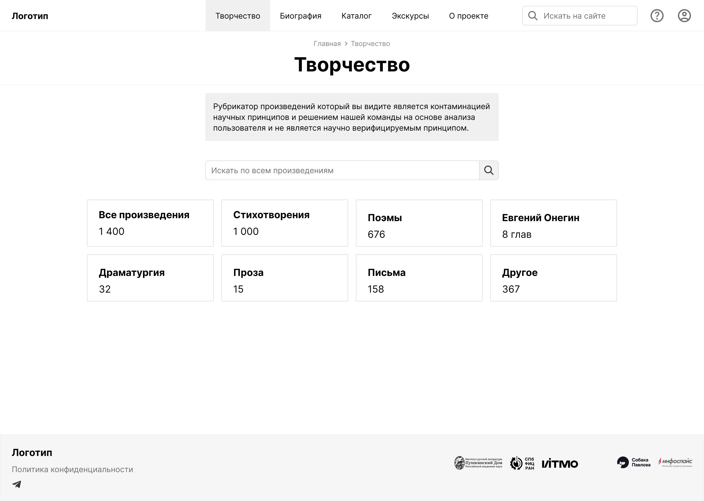
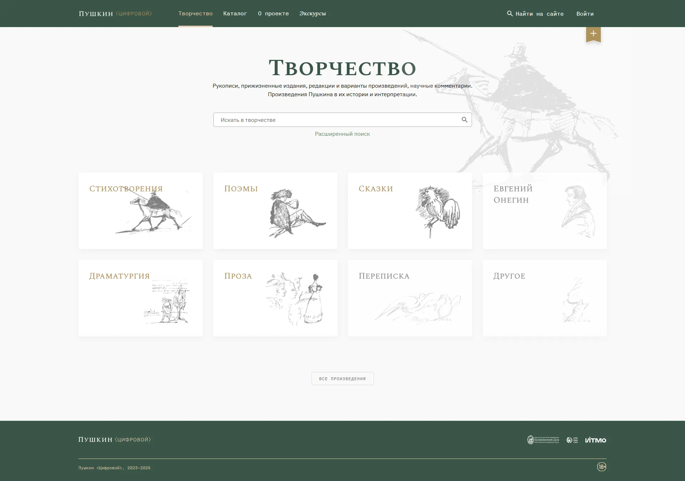
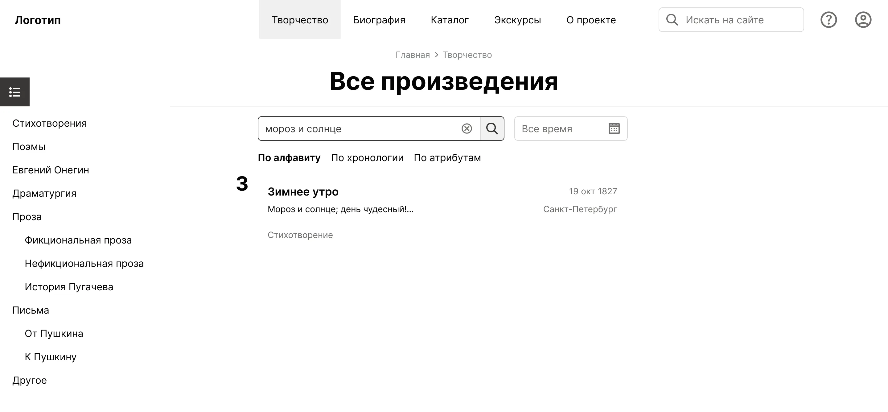
Контекст произведения
Для академиков произведение Пушкина не существует отдельно от контекста. Оно связано с биографией автора, историческими событиями, рукописями, редакциями, комментариями и другими материалами.
Поэтому страница произведения была спроектирована не как простая страница текста, а как точка входа в связанные материалы.
Пользователь мог начать с привычного текста, а затем раскрыть контекст: рукописи, редакции, первые издания, комментарии, библиографию и другие материалы вокруг произведения.
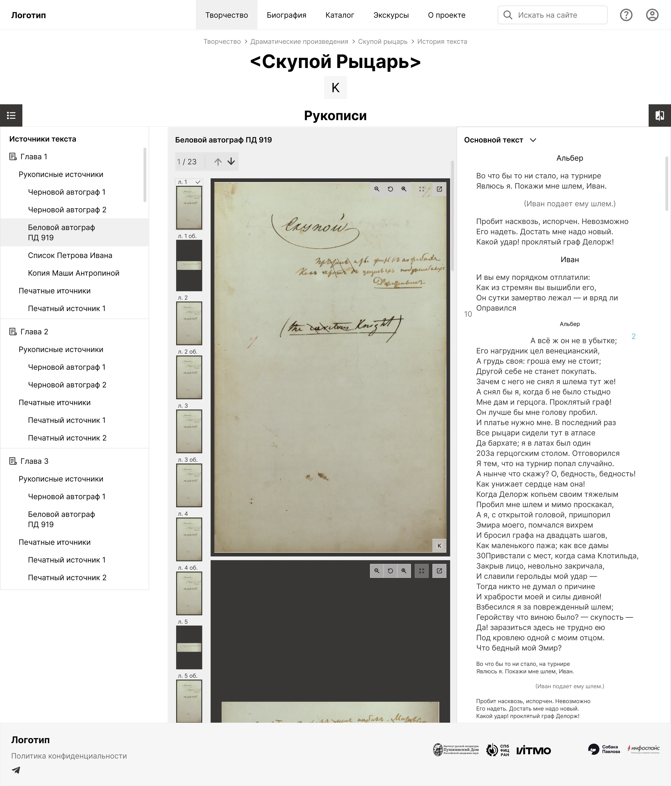
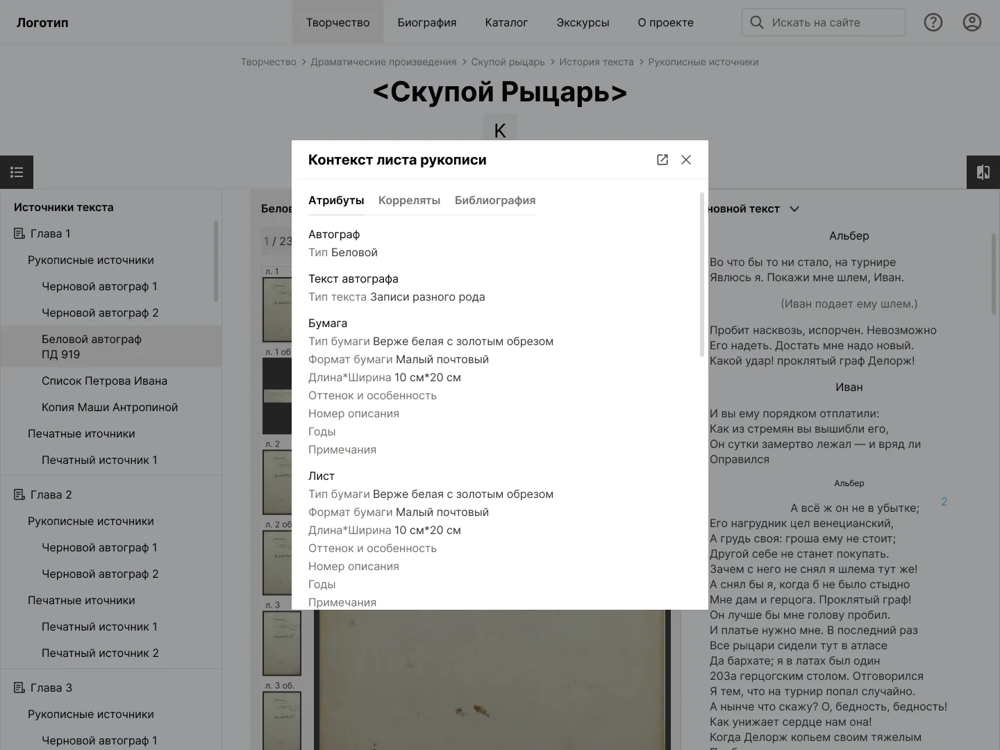
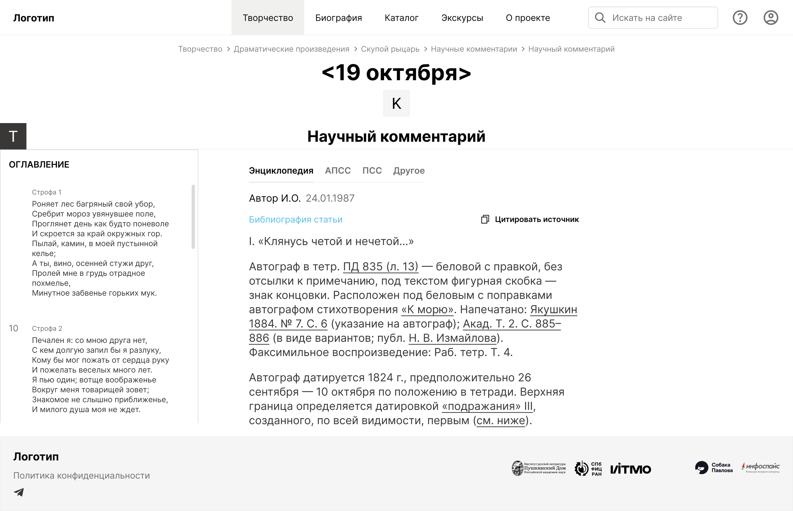
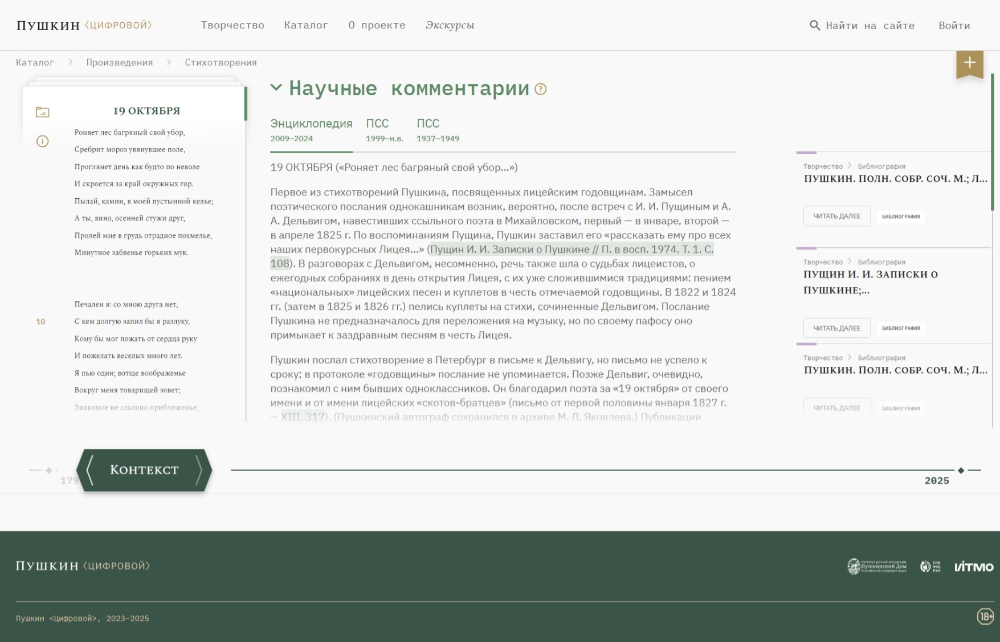
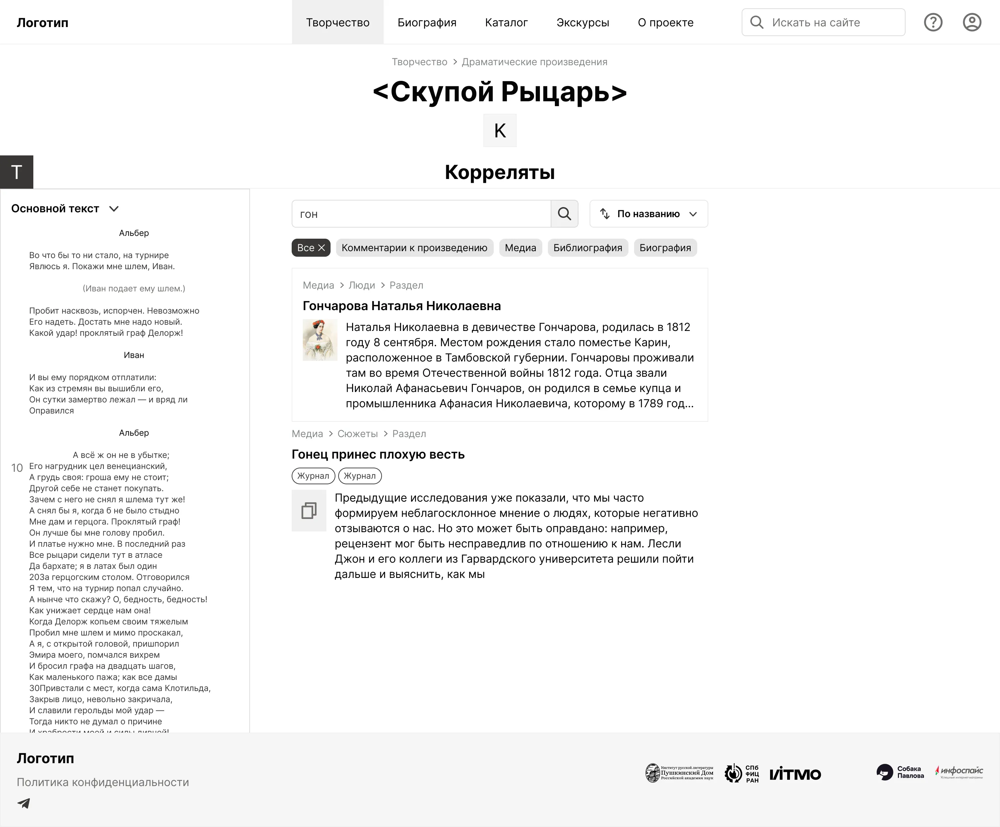
Работа с экспертами
Работа с академическим сообществом сильно отличалась от привычных продуктовых проектов. Если обычно заказчик — это бизнес, для которого деньги = время, или разработчики, скупые на слова и эмоции, то здесь всё было иначе.
Созвон мог начаться с обсуждения структуры страницы произведения, а через пару часов мы уже оказывались в какой-то точке биографии Александра Сергеевича. Самый длинный разговор с заказчиком за весь проект длился почти три часа.
Для академиков произведение не существует отдельно от контекста — рукописей, комментариев, исторических событий, связей с другими материалами. И этим взглядом они хотели поделиться не только с исследователями, но и с более широкой аудиторией.
Поэтому перед тем как принимать интерфейсные решения, приходилось сначала разбираться в логике предметной области и понимать, как сами исследователи смотрят на материал.
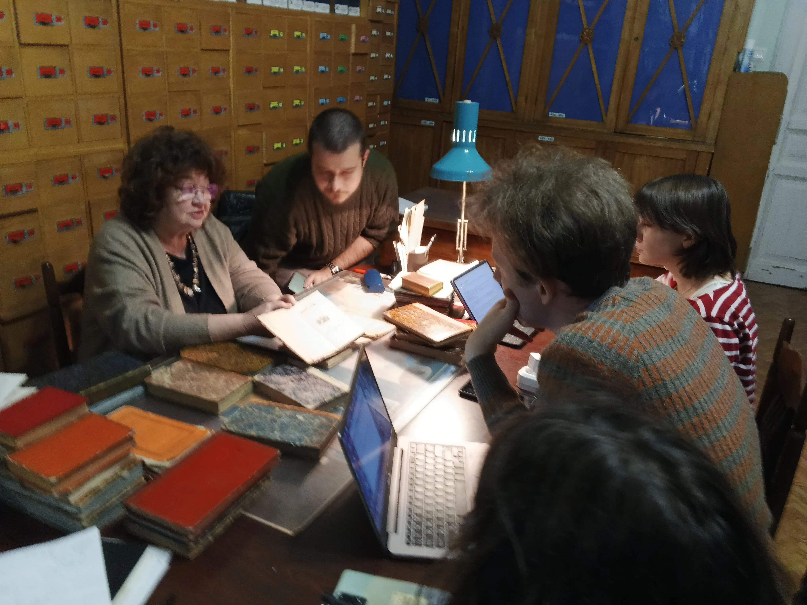
Результат
В результате был спроектирован UX для десктопной и мобильной версий научно-просветительского портала.
В работе были проработаны:
- 17 разделов портала;
- 27 типов контента;
- 4 портрета пользователей;
- библиотека компонентов для дальнейшей работы команды;
- сценарии работы с произведениями, рукописями, комментариями, библиографией и просветительскими материалами.
Для меня этот проект стал опытом проектирования системы знаний, где интерфейс должен был одновременно сохранять академическую точность и помогать людям без специальной подготовки не потеряться в сложном материале.
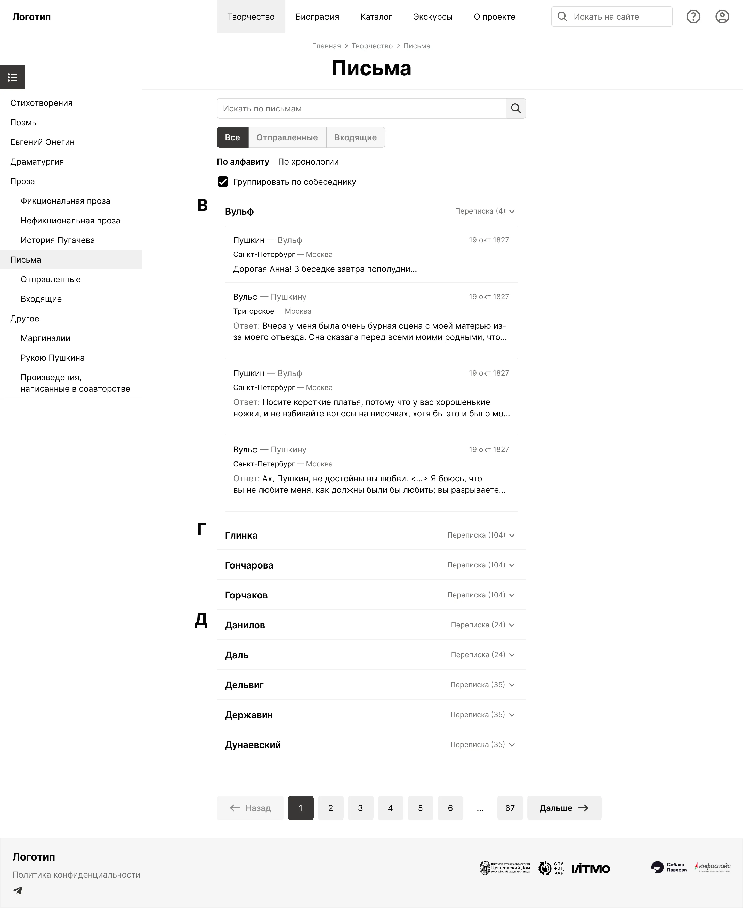
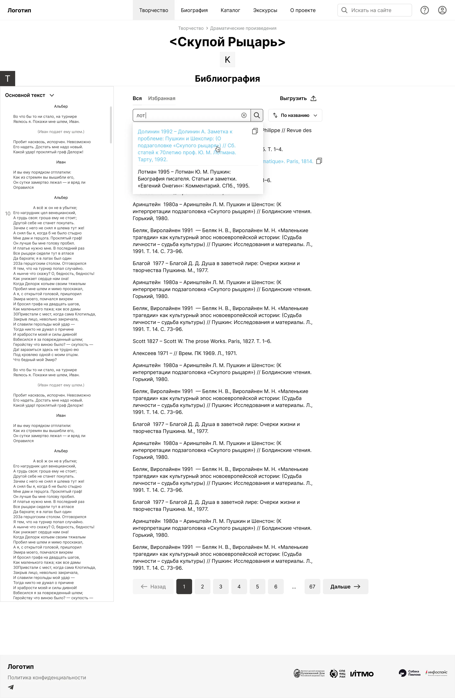